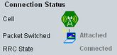
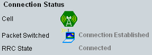

An established connection to the UE is a prerequisite for many signaling tests, including the combined signal path measurement described in this application sheet. The following example uses a single downlink stream. For MIMO tests, additional cabling and related configuration of routing settings are required.
To set up a connection, proceed as follows:
Reset your R&S CMW to ensure a definite instrument state.
Connect your UE to the RF 1 COM connector.
Open the "LTE Signaling" application, e.g. from the task bar (press "TASKS" to open the task bar).
If the application is not present in the task bar, enable it in the "Generator/Signaling Controller" dialog (press "SIGNAL GEN" to open the dialog).
In the main view of the signaling application, adjust the RF settings to the capabilities of your UE.
Configure especially the duplex mode (FDD / TDD), the band, the channel and the cell bandwidth. The "RS EPRE" must be sufficient so that the UE under test can receive the DL signal.

Press the "Config" hotkey to open the configuration dialog.
In section "RF Settings", select a bidirectional RF connector for input and output. This example uses RF 1 COM.
If necessary, also adjust the "External Attenuation" settings.
Close the configuration dialog.
To turn on the DL signal, press ON | OFF and wait until the "LTE Signaling" softkey indicates the "ON" state and the hour glass symbol has disappeared.
Switch on the UE.
The UE synchronizes to the DL signal and attaches. A default bearer is established.
Note the connection states displayed in the main view and wait until the attach procedure is complete.
By default, the RRC connection is kept after the attach is complete.

The default bearer and the established RRC connection are sufficient for many tests.
If you want to set up a dedicated bearer, press the "Connect" hotkey.
Note the connection states displayed in the main view and wait until the connection has been established.

Attach failure If the attach procedure fails, check whether the UE capabilities are in accordance with the security settings in the "Network" section of the configuration dialog. If your UE needs a DL signal without padding bits for attach, disable downlink padding in the "Connection" section of the configuration dialog. You can check the power settings in the configuration dialog sections "Downlink Power Levels" and "Uplink Power Control". |